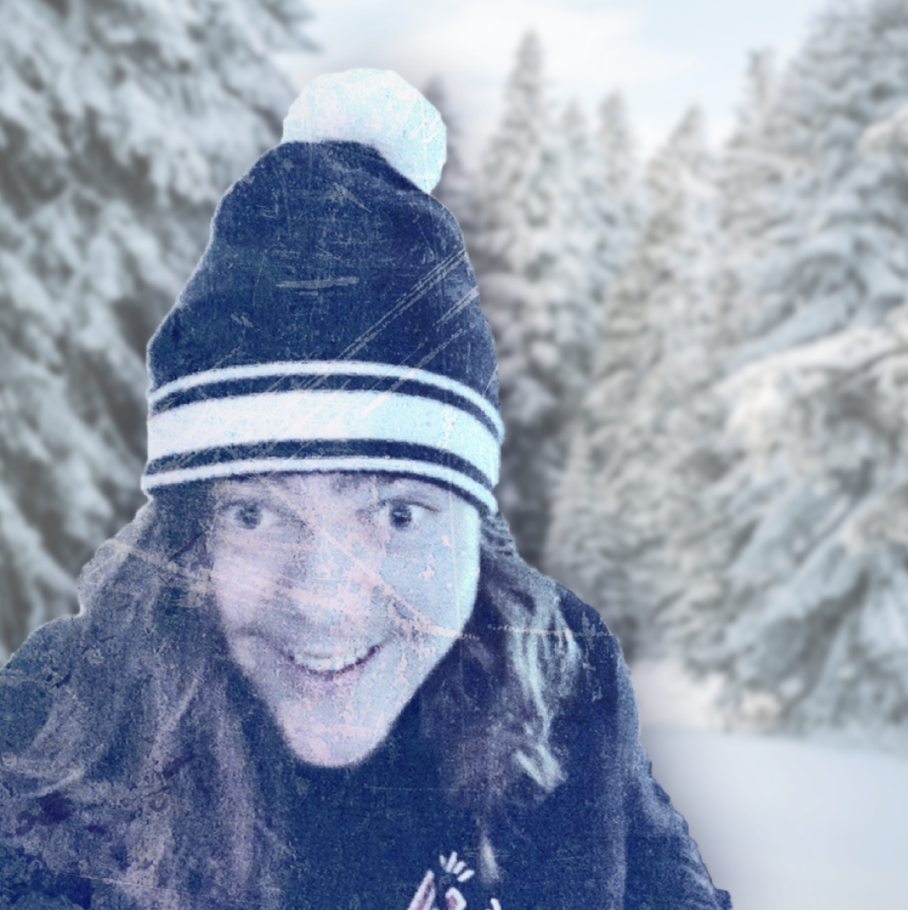
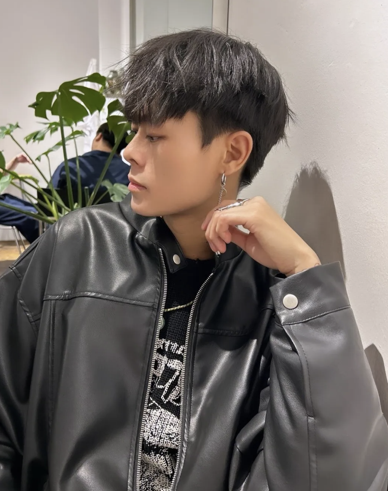
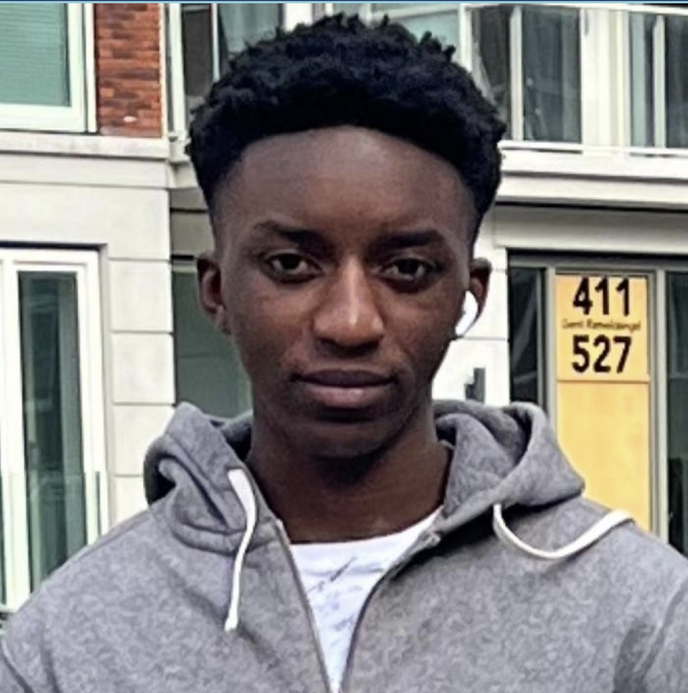

Houd je koel, Meet de cast:


Mart (22)
Mart is een grote nerd die houdt van alles retro video games en dergelijk. Hij is een afgestudeerde media vormgever van het Media college Amsterdam, zo is hij ook terecht gekomen bij CMD zodat hij verder kan met het uitwerken van zijn ideeën. Hij verdoet zijn tijd met tekenen, lps sparen, video's bewerken en slapen. Ook is hij erg creatief en helpt hij altijd graag een handje mee met het bedenken van nieuwe ideeën en concepten. Mart heeft een passie voor nieuwe dingen proberen en is vrijwel altijd met iets nieuws bezig, ook al maakt hij het niet altijd af.
Een ware creatieve Jack-of-all-trades. Met een achtergrond in design, signmaking en applicatieontwikkeling heeft hij de unieke gave om visuele concepten tot leven te brengen, zowel op digitaal als fysiek vlak. Zijn passie voor grafisch ontwerp heeft hem naar CMD (Communicatie en Multimedia Design) geleid, waar hij zijn technische skills en artistieke flair verder heeft aangescherpt. Maar dat is nog niet alles! Kevin is ook een gepassioneerde danser in zijn vrije tijd! Of het nu gaat om het creëren van spetterende video-editingprojecten of het choreograferen van zijn eigen dansmoves, Kevin weet altijd hoe hij de aandacht trekt. Het is die onmiskenbare mix van creatieve expertise en artistieke expressie die hem onderscheidt in alles wat hij doet. Kevin is de brug tussen digitale kunst en pure creativiteit!

Kevin (26)

Faisal (21)
Als het altijd controversiële spreekpunt van de podcast is Faisal de perfecte persoon om het gesprek een compleet andere wending te geven. Soms wordt er ook serieus afgevraagd wat er nou precies omgaat in zijn hoofd. Hij is een eerstejaars student bij CMD met een passie voor coderen en digitale design. Als een echte voetbalfanaat staat hij bekend om zijn expertise hierover te kunnen delen met de ware gepassioneerden. Het zelf beoefenen van de sport en het spelen van videogames is hoe hij zijn vrije tijd benut. Faisal is de perfecte persoon die nodig was om wat extra's toe te voegen aan KoelCast.
Onze koele missie